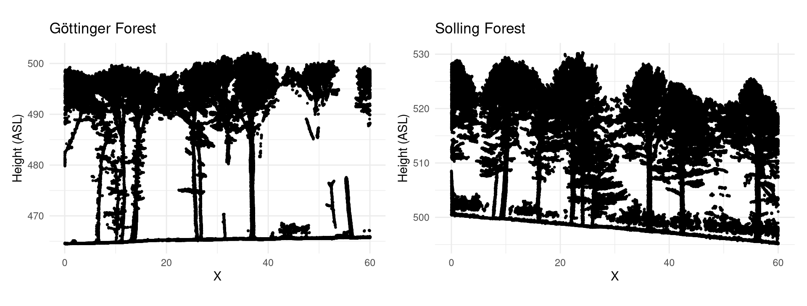
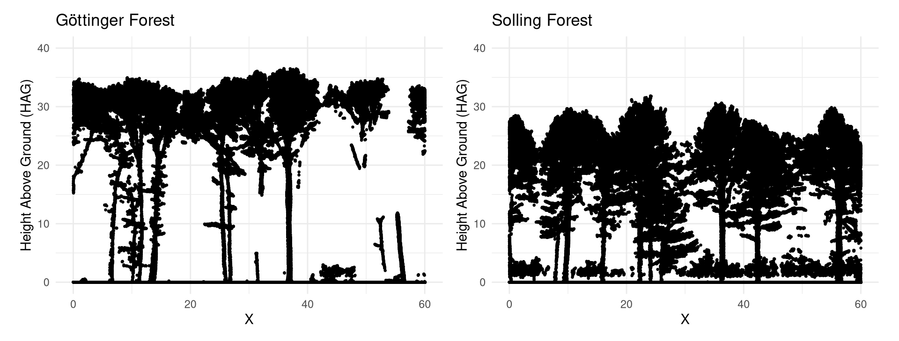
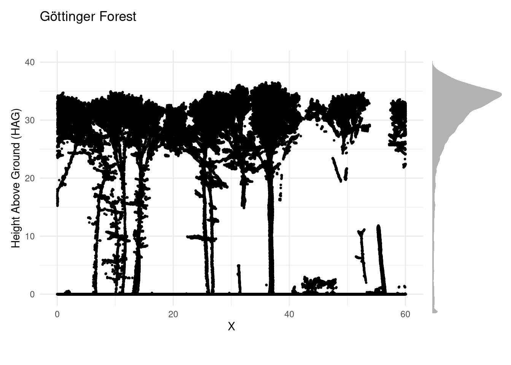
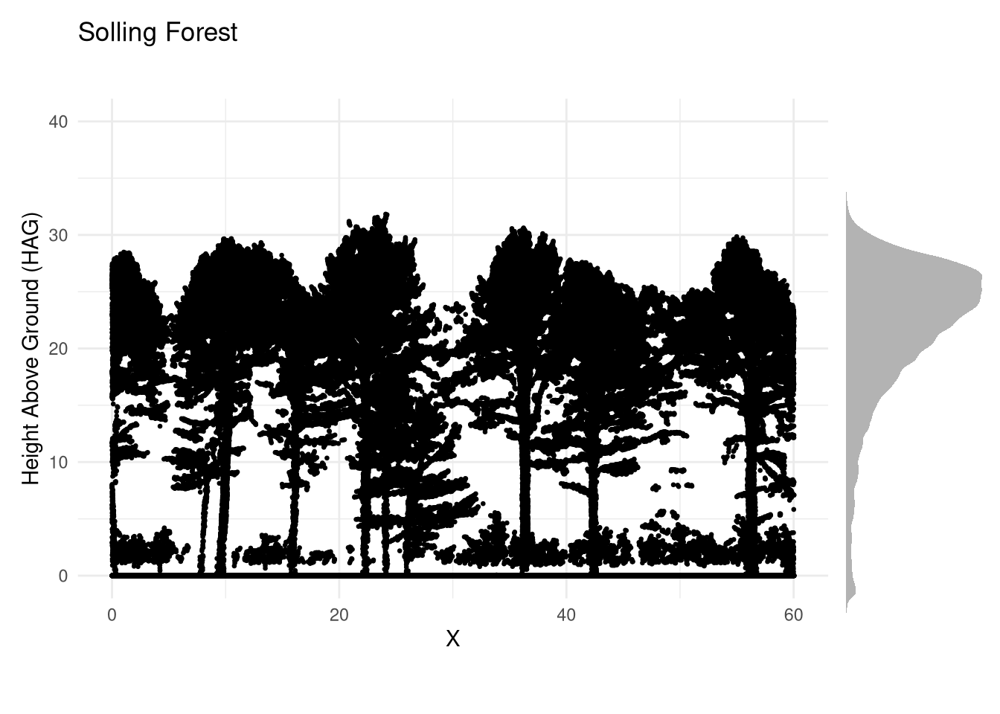
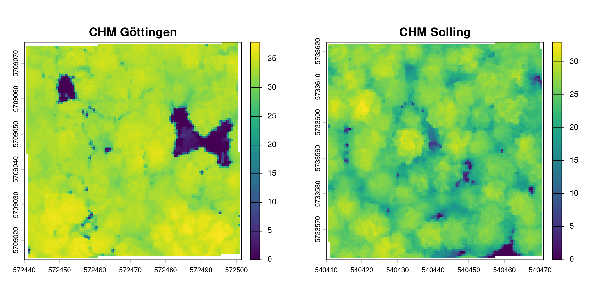
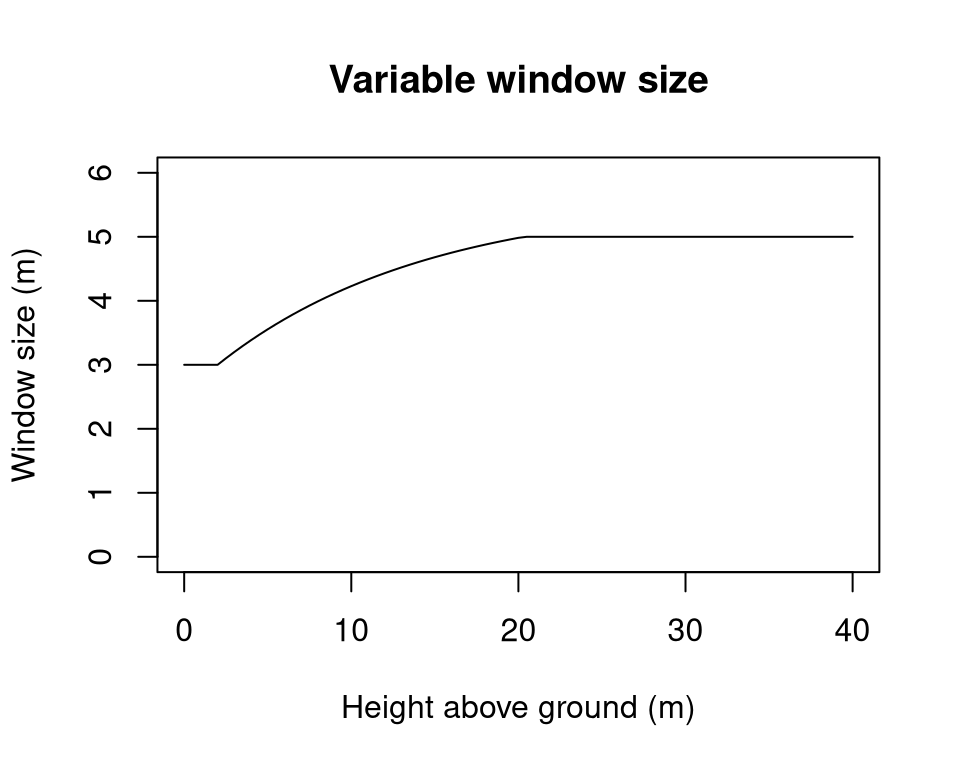
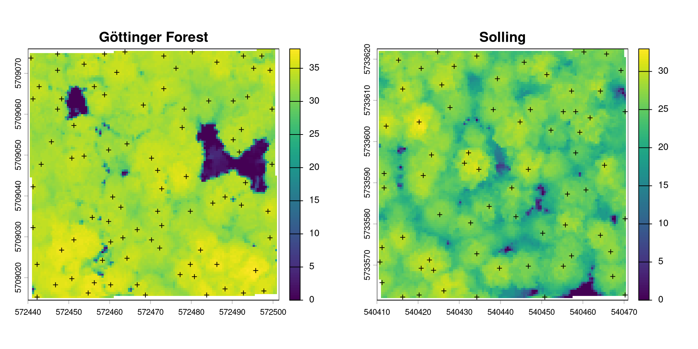
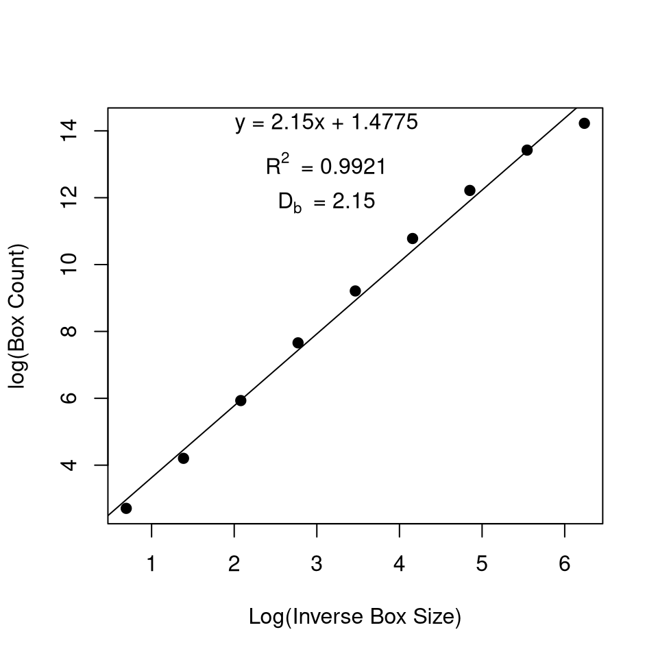

# load libraries
library(terra) # Geospatial data (raster)
library(sf) # Geospatial data (vector)
library(lidR) # Laserscanning Data (lidar)
library(rTwig) # Quantitative Structure Models
library(ggplot2) # Pretty plotting
library(patchwork) # plot arrangement
# Or install (if required)
# install.packages("terra")
# install.packages("sf")
# install.packages("lidR", repos = c("https://r-lidar.r-universe.dev", "https://cloud.r-project.org"))
# install.packages("rTwig")
# install.packages("ggplot2")
# install.packages("patchwork")Processing of 3D Lidar data to assess forest structure
Introduction
In this tutorial we will learn how to work with LiDAR data to estimate forest structure. To do so we will compare two forest plots in Lower Saxony of varying structure: One in the Göttinger Forest and the other in the Solling. Though both plots are dominated by beech stands of similar age, they differ in structural properties like tree height, canopy cover and understory regeneration. By looking into the vertical distribution of lidar returns, we can capture these differences.
Before we start
For this tutorial we will need several R packages that might need to be installed first.
For handling Lidar Data we use the “lidR” package. A very good documentation of the package including further functionalities can be found here: https://r-lidar.github.io/lidRbook/
Install and load required libraries
We will work with two small point clouds (60x60m) acquired by Drone. To start with, let’s download and import the two datasets.
Download data
# Data access
## Download Pointcloud Göttingen
url_las_goe <- "https://cloud.hawk.de/index.php/s/GgTdjGMMz4rFoYR/download"
download.file(url_las_goe, destfile = "uls_goewald.laz", mode = "wb")
## Download pointcloud Solling
url_las_sol <- "https://cloud.hawk.de/index.php/s/S923yWMyg6mdNFF/download"
download.file(url_las_sol, destfile = "uls_solling.laz", mode = "wb")Import the .laz files
# load lidar point cloud
las_goe <- readLAS("uls_goewald.laz")
las_sol <- readLAS("uls_solling.laz")Inspecting the point cloud data
Before we compute anything, let’s see what we are actually working with. Run the chunks below and answer the following:
- In which format is the dataset stored?
- What are the pulse density and the point density, and why do the two differ?
- Which point attributes are stored in the datasets?
- Where do the two files differ?
## Göttinger Wald
print(las_goe)class : LAS (v1.4 format 7)
memory : 260.6 Mb
extent : 572440.3, 572501.2, 5709015, 5709076 (xmin, xmax, ymin, ymax)
coord. ref. : WGS 84 / UTM zone 32N
area : 3721 m²
points : 3.79 million points
type : terrestrial
density : 1019.77 points/m²
density : 407.36 pulses/m²## Solling
print(las_sol)class : LAS (v1.2 format 3)
memory : 206.3 Mb
extent : 540410.3, 540470.8, 5733562, 5733622 (xmin, xmax, ymin, ymax)
coord. ref. : WGS 84 / UTM zone 32N
area : 3721 m²
points : 3.38 million points
type : terrestrial
density : 908.25 points/m²
density : 516.77 pulses/m²names(las_goe) [1] "X" "Y" "Z"
[4] "gpstime" "Intensity" "ReturnNumber"
[7] "NumberOfReturns" "ScanDirectionFlag" "EdgeOfFlightline"
[10] "Classification" "ScannerChannel" "Synthetic_flag"
[13] "Keypoint_flag" "Withheld_flag" "Overlap_flag"
[16] "ScanAngle" "UserData" "PointSourceID"
[19] "R" "G" "B" table(las_goe$NumberOfReturns)
1 2 3 4 5
188849 1279119 1591086 625079 110416 The LAS format
print() reveals that the two files are not stored identically: the Göttingen data are LAS version 1.4, point data record format 7, the Solling data LAS version 1.2, point data record format 3. Both numbers matter:
- The version defines the structure of the file as a whole — its header, the coordinate scaling, and which record formats are permitted.
- The point data record format (PDRF) defines which attributes are stored for each individual point.
What exactly changes between versions and formats is laid out in the specification, which is maintained by the American Society for Photogrammetry and Remote Sensing (ASPRS) — also the reason the classification codes (2 = ground, 5 = high vegetation, …) are known as ASPRS classes.
Full specification: https://publicdocuments.asprs.org/las-v14-r16-2025
Pointcloud visualisation
plot() opens an interactive 3D window in which the point cloud can be rotated and zoomed. Colouring the points by height makes the vertical structure easier to read.
plot(las_goe, color = "Z", bg = "white")
plot(las_sol, color = "Z", bg = "white")Based on this first visual inspection, what structural differences can you see between the two stands?
Cutting a transect
The 3D view is useful for a first impression, but it is hard to compare two stands in a rotating window, so let’s cut a slice through the pointcloud and project it onto a plane, so we can see the vertical profile. We’ll use a little helper function that cuts a 5 m wide slice along the centre line of each point cloud.
# helper function for transect-clipping
get_transect <- function(las) {
b <- st_bbox(las)
cy <- (b$ymin + b$ymax) / 2
clip_transect(las, c(b$xmin, cy), c(b$xmax, cy), width = 5, xz = TRUE)
}
# clipping the transects
las_tr_goe <- get_transect(las_goe)
las_tr_sol <- get_transect(las_sol)
print(las_tr_goe)class : LAS (v1.4 format 7)
memory : 18 Mb
extent : 0, 60.07, 0, 4.9999 (xmin, xmax, ymin, ymax)
coord. ref. : WGS 84 / UTM zone 32N
area : 300 m²
points : 262 thousand points
type : terrestrial
density : 873.44 points/m²
density : 384.73 pulses/m²Plotting the transects
## plot the transects with ggplot
p_goe <- ggplot(payload(las_tr_goe), aes(X,Z)) +
geom_point(size = 0.5, color = "black") +
labs(title = "Göttinger Forest",
x = "X",
y = "Height (ASL)"
) +
coord_equal() +
theme_minimal()
p_sol <- ggplot(payload(las_tr_sol), aes(X,Z)) +
geom_point(size = 0.5, color = "black") +
labs(title = "Solling Forest",
x = "X",
y = "Height (ASL)"
) +
coord_equal() +
theme_minimal()
# side by side plotting using patchwork
p_goe | p_sol
The profiles show the vertical structure, but the Z values are still heights above sea level (ASL). Together with the sloping terrain it is impossible to compare the actual tree heights between the two sites.
Normalisation solves this: we subtract the terrain height from every point, so that Z becomes height above ground. normalize_height() overwrites the original Z value with the height above Ground (HAG)
The function needs two things: which classification code identifies the ground points (2 under the ASPRS scheme), and an algorithm to interpolate a continuous terrain surface from them. Here we use tin(), a Delaunay triangulation of the ground returns, from which the height beneath each point is then subtracted.
Normalizing Height
# normalize height
las_goe_norm <- normalize_height(las = las_goe,
algorithm = tin(),
use_class = 2)
las_sol_norm <- normalize_height(las = las_sol,
algorithm = tin(),
use_class = 2)With the normalised heights in place, we can cut the transects again and plot HAG instead of Z. The ground now forms a flat line at zero, and the vertical axis reads directly as tree height.
Compare the two profiles again. Which differences that were hidden by the terrain are now visible, and how tall are the tallest trees in each stand?
las_tr_goe <- get_transect(las_goe_norm)
las_tr_sol <- get_transect(las_sol_norm)
p_goe <- ggplot(payload(las_tr_goe), aes(X,Z)) +
geom_point(size = 0.5, color = "black") +
labs(title = "Göttinger Forest",
x = "X",
y = "Height Above Ground (HAG)"
) +
ylim(c(0,40)) +
coord_equal() +
theme_minimal()
p_sol <- ggplot(payload(las_tr_sol), aes(X,Z)) +
geom_point(size = 0.5, color = "black") +
labs(title = "Solling Forest",
x = "X",
y = "Height Above Ground (HAG)"
) +
ylim(c(0,40)) +
coord_equal() +
theme_minimal()
# side by side plotting
p_goe | p_sol
Add vertical distribution of points
To quantify these structural differences, we can look into the vertical distribution of the returns. Let’s add a density curve beside each transect that shows how the points are spread over height. We keep only points above ground, since ground returns would otherwise produce a spike at zero that dominates the curve.
# Height distributions
h_goe <- ggplot(subset(payload(las_goe_norm), Z > 0), aes(Z)) +
geom_density(fill = "grey70", color = NA) +
xlim(0, 40) +
coord_flip() +
theme_void()
h_sol <- ggplot(subset(payload(las_sol_norm), Z > 0), aes(Z)) +
geom_density(fill = "grey70", color = NA) +
xlim(0, 40) +
coord_flip() +
theme_void()
# Combine
(p_goe | h_goe) + plot_layout(widths = c(5, 1)) 
(p_sol | h_sol) + plot_layout(widths = c(5, 1))
Calculating Canopy Height Models
So far we have looked at the point cloud from the side. Now let’s look at it from above. A Canopy Height Model (CHM) is a raster in which every cell holds the height of the highest point within it.
This only works because we normalised the point clouds earlier. Since Z is now height above ground, the raster values can be read directly as tree height.
res = 0.5 sets the cell size in metres. The resolution should match the point density
dsmtin() builds the surface by Delaunay triangulation of the first returns, the same principle we used for the terrain model in normalize_height(), only applied to the top of the canopy instead of the ground. Each raster cell then takes its value from the triangulated surface.
chm_goe <- rasterize_canopy(las_goe_norm, res = 0.5, algorithm = dsmtin())
chm_sol <- rasterize_canopy(las_sol_norm, res = 0.5, algorithm = dsmtin())
par(mfrow = c(1,2))
plot(chm_goe, main = "CHM Göttingen")
plot(chm_sol, main = "CHM Solling")
Compare the two rasters and consider:
- Where is the canopy closed, and where do you see gaps reaching down towards the ground?
- How variable is the canopy surface within each stand? A rough, uneven surface points to trees of differing age and size, a smooth one to a uniform stand.
- Can you identify individual crowns? In which of the two stands is this easier, and why?
Metrics at the plot level
We can also put numbers to this visual impression. cloud_metrics() calculates a set of summary statistics for the whole point cloud. .stdmetrics_z is lidR’s standard collection of height metrics. Two filters are applied before calculating the metrics: Only first returns are used and points below zero are dropped.
# first returns only, and drop points below the interpolated ground surface
prep <- function(las){
filter_poi(filter_first(las), Z >= 0)
}
# calculate metrics
m_goe <- cloud_metrics(prep(las_goe_norm), .stdmetrics_z)
m_sol <- cloud_metrics(prep(las_sol_norm), .stdmetrics_z)
# here we use a selection of metrics only
vars <- c("zmax", "zmean", "zsd", "zq95", "pzabove2", "pzabovezmean", "zentropy")
# combine results
round(rbind(Göttinger = unlist(m_goe)[vars],
Solling = unlist(m_sol)[vars]), 2) zmax zmean zsd zq95 pzabove2 pzabovezmean zentropy
Göttinger 38.19 28.11 10.11 34.99 90.03 79.79 0.68
Solling 33.31 21.54 6.89 27.89 93.99 67.65 0.79Are these results what you expected after looking at the transects? Which stand appeared structurally more diverse there, and which one comes out on top here?
Individual Tree Detection
So far we have described the stands as a whole. The next step is to resolve them into individual trees.
This happens in two steps. Individual Tree Detection (ITD) locates the position and height of each treetop. Individual Tree Segmentation (ITS) then assigns every return in the point cloud to one of those trees.
The local maximum filter
The standard approach is a Local Maximum Filter (LMF). A window is moved across the canopy surface, and wherever the centre cell is the highest point within that window, a tree top is recorded. The window size is a crucial parameter here.
Since crown size scales with tree height, we let the window grow with the height of the point being tested. we calculate window size as a function of height.
# variable window size as a function of height
f <- function(x) {
y <- 2.6 * (-(exp(-0.08 * (x - 2)) - 1)) + 3
# after https://r-lidar.github.io/lidRbook/itd.html
y[x < 2] <- 3
y[x > 20] <- 5
return(y)
}
heights <- seq(0, 40, 0.5)
plot(heights, f(heights), type = "l", ylim = c(0, 6),
xlab = "Height above ground (m)", ylab = "Window size (m)",
main = "Variable window size")
Running the tree detection
ttops_goe <- locate_trees(chm_goe, lmf(ws = f, hmin = 5))
ttops_sol <- locate_trees(chm_sol, lmf(ws = f, hmin = 5))hmin = 5 sets a detection floor at 5 m, so that understorey vegetation and noise near the ground are not counted as trees. The result is an sf object with one point per tree, carrying its coordinates and its height. We can add the tree tops on top of the Canopy Height model to visually inspect the results.
Which plot has more trees in total?
par(mfrow = c(1, 2))
plot(chm_goe, main = "Göttinger Forest")
plot(st_geometry(ttops_goe), add = TRUE, pch = 3, cex = 0.6)
plot(chm_sol, main = "Solling")
plot(st_geometry(ttops_sol), add = TRUE, pch = 3, cex = 0.6)
Individual Tree Segmentation
Detection gives us points. Segmentation gives us trees: every return in the cloud is assigned to one of the detected treetops.
dalponte2016() works on the raster. Starting from each treetop, it grows a region outwards into neighbouring cells as long as they stay within a plausible height range for that crown, and stops where the surface drops off or another crown is reached. segment_trees() then transfers the resulting crown outlines back to the point cloud and writes a new attribute, treeID, into every point.
# segment point cloud
las_goe_norm <- segment_trees(las_goe_norm, dalponte2016(chm_goe, ttops_goe))
las_sol_norm <- segment_trees(las_sol_norm, dalponte2016(chm_sol, ttops_sol)) Colouring the point cloud by treeID shows how well the delineation worked.
# 3D plot
x <- plot(las_goe_norm, bg = "white", size = 4,color = "treeID")
add_treetops3d(x, ttops_goe)
x <- plot(las_sol_norm, bg = "white", size = 4,color = "treeID")
add_treetops3d(x, ttops_sol)Did the tree segmentation work equally well in both plots? If not, what could be the reason for the differences?
Metrics at the tree level
Because every point now knows which tree it belongs to, we can derive attributes per tree rather than per plot:
crowns_goe <- crown_metrics(las_goe_norm, func = .stdtreemetrics)
crowns_sol <- crown_metrics(las_sol_norm, func = .stdtreemetrics)
crowns_goeSimple feature collection with 87 features and 4 fields
Geometry type: POINT
Dimension: XYZ
Bounding box: xmin: 572440.7 ymin: 5709015 xmax: 572499.8 ymax: 5709075
z_range: zmin: 33.2567 zmax: 38.1914
Projected CRS: WGS 84 / UTM zone 32N
First 10 features:
treeID Z npoints convhull_area geometry
1 1 35.6074 29305 28.451 POINT Z (572464 5709075 35....
2 2 35.1106 28892 27.443 POINT Z (572479.9 5709075 3...
3 3 34.0275 21620 20.376 POINT Z (572447.4 5709075 3...
4 4 35.6105 13285 18.301 POINT Z (572456.9 5709075 3...
5 5 34.9293 43504 32.055 POINT Z (572472.9 5709074 3...
6 6 35.2873 20382 26.778 POINT Z (572488.7 5709074 3...
7 7 34.7442 19111 17.602 POINT Z (572497.2 5709074 3...
8 8 34.7135 321 0.238 POINT Z (572440.7 5709074 3...
9 9 35.6219 78760 57.968 POINT Z (572486.3 5709071 3...
10 10 35.5465 36980 42.155 POINT Z (572455.1 5709072 3...crowns_solSimple feature collection with 68 features and 4 fields
Geometry type: POINT
Dimension: XYZ
Bounding box: xmin: 540410.7 ymin: 5733562 xmax: 540470.4 ymax: 5733622
z_range: zmin: 25.7802 zmax: 33.3098
Projected CRS: WGS 84 / UTM zone 32N
First 10 features:
treeID Z npoints convhull_area geometry
1 1 28.9618 21970 21.789 POINT Z (540425.2 5733622 2...
2 2 27.8154 31249 37.403 POINT Z (540460.2 5733622 2...
3 3 27.9368 26667 29.971 POINT Z (540465.9 5733621 2...
4 4 29.4133 43033 40.053 POINT Z (540433.9 5733620 2...
5 5 29.5430 53989 48.467 POINT Z (540412.7 5733621 2...
6 6 29.5167 55967 55.482 POINT Z (540448.5 5733619 2...
7 7 30.0066 44581 46.869 POINT Z (540428.9 5733618 3...
8 8 28.7825 50441 41.740 POINT Z (540420 5733618 28....
9 9 26.9113 25725 32.666 POINT Z (540464.6 5733617 2...
10 10 30.0389 62112 70.262 POINT Z (540451.1 5733616 3...This gives us the height of each tree and the area of each tree crown.
Forest structural complexity: the box dimension
Every metric so far captured one aspect of structure, and each ranked our two stands differently. The box dimension (Db) condenses all of it into a single number.
The point cloud is divided into cubic voxels, and the occupied ones are counted. The voxels are then made progressively smaller and the count repeated. Db is the slope of the regression between log box count and log inverse box size: A structure that is simple and open gains little from finer inspection and yields a low value. One that fills space with detail at every scale — many crowns, several layers, branches occupying the gaps between them — keeps producing newly occupied voxels and yields a high one. The R² of the fit indicates how consistently that behaviour repeats across scales.
The concept is covered in detail in the accompanying document on fractal complexity — here we simply apply it.
first we filter only points above 0,5 m height, to exclude ground and ground vegetation.
# X, Y, Z of all points above 0.5 m, from the normalised clouds
cloud_goe <- las_goe_norm@data[Z > 0.5, 1:3]
cloud_sol <- las_sol_norm@data[Z > 0.5, 1:3]lowercutoff = 0.1 sets the smallest voxel edge to 10 cm — below that the count would describe the scanner’s sampling pattern rather than the forest. rm_int_box = TRUE drops the single box enclosing the whole cloud, which carries no structural information but would leverage the slope.
db_goe <- box_dimension(cloud_goe, lowercutoff = 0.1, rm_int_box = TRUE, plot = "2D")
db_sol <- box_dimension(cloud_sol, lowercutoff = 0.1, rm_int_box = TRUE, plot = "2D")Which stand has the higher box dimension, and does the ranking agree with zentropy and the transect profiles?
One caveat: the method was developed for terrestrial scans at centimetre resolution. Our drone data are denser than most ALS but far from that standard, and the closed Göttinger canopy occludes its understorey more than the Solling does. The comparison between our two plots holds — same sensor, same configuration — but the absolute values should not be compared to published TLS-based figures.